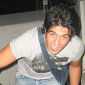
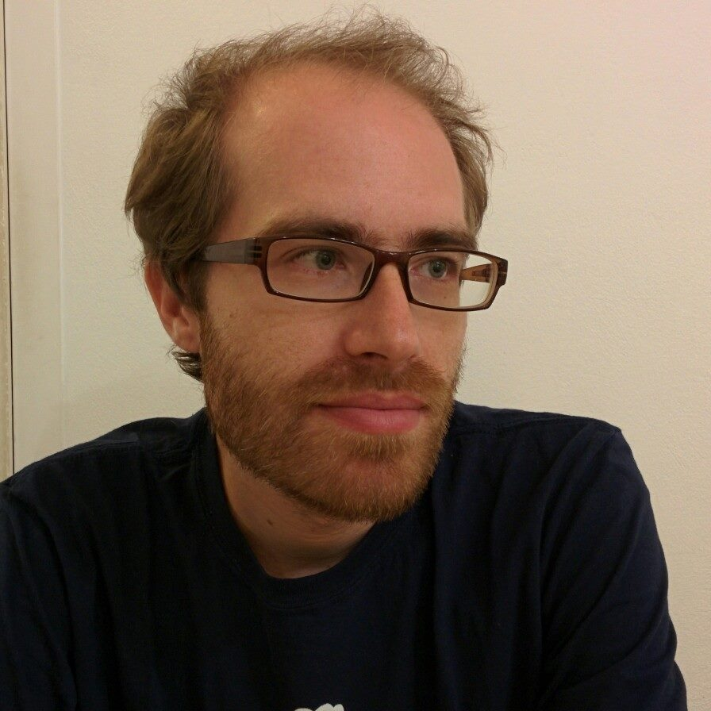
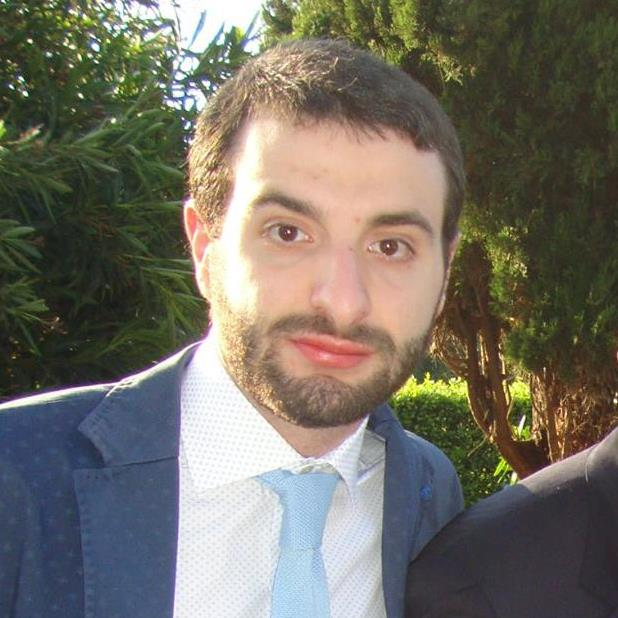
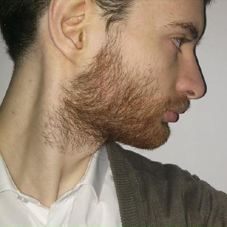

Chi

Alessandro Natilla
Software Developer @ THESIS s.r.l.
Organizzatore, Speaker
Arch Linux, Debian
Tommaso Di Noia
Associate Professor @ Polytechnic University of Bari
Organizzatore
Ubuntu, Debian

Pierpaolo Basile
Assistant Professor @ Department of Computer Science - University of Bari "Aldo Moro"
Organizzatore
Ubuntu, Debian
Andrea Scarpino
Software Developer involved in Open Source software (#KDE, former #Arch Linux dev and more)
Speaker
Arch Linux, Arch Linux ARM



Luca De Cicco
Assistant Professor @ Polytechnic University of Bari
Speaker
Ubuntu


Gaetano Carlucci
Assistant Professor @ Polytechnic University of Bari
Speaker
Ubuntu